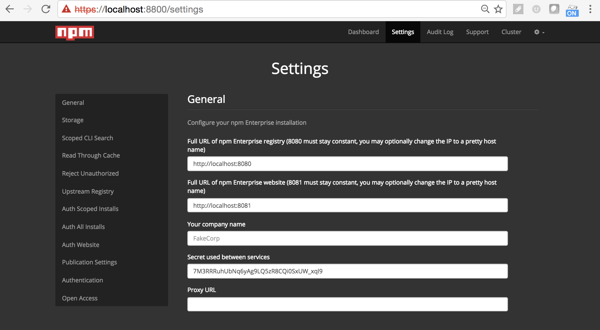
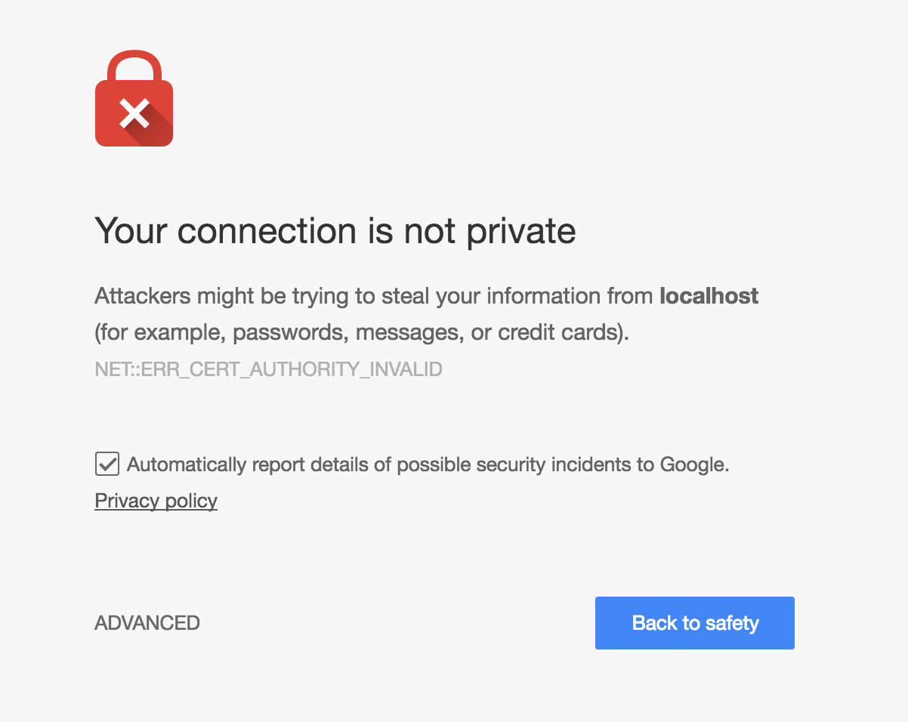

Server Configuration
You can customize the server's configuration by visiting npm
Enterprise's admin console on :8800

Your First Time Running npm Enterprise
The first time you visit your appliance on port :8800, there is some
initial configuration that you will need to perform:
because no certificate has been configured for your appliance, you will need to proceed past a certificate warning in the browser:

next you will be prompted to upload a certificate, or to generate a self-signed certificate (this certificate will be used going forward when accessing the admin console, this will need to be configured separately for the website and registry see Terminating SSL with NGINX).
on the next screen you will be prompted for the
billing emailandlicense key, which you were provided with when you started your npm Enterprise trial.- you will next be prompted to set a password for the npm Enterprise admin console. This password is used by administrators to configure your appliance.
- Next, a series of preflight checks will be run. These checks ensure that you are running hardware that meets the requirements.
- The Docker containers will now begin downloading for npm Enterprise, and you can proceed to customizing your configuration.
Customizing Your Configuration
There are various dials and knobs that you can use to configure your npm Enterprise appliance:
Full URL of npm Enterprise registry
This field should contain the URL that your users will be using to access npm Enterprise. If you have placed a pretty DNS name on your npm Enterprise appliance (perhaps using nginx, or a load-balancer) you should place this DNS name here. Note: For installs and publications to work, this URL must be accessible.
While you may choose to use the default registry URL
(http://my-server:8080), setting an alternative port # will not result
in the registry binding to an alternative port (it
always binds to :8080).
Full URL of npm Enterprise website
The externally accessible URL of your npm Enterprise website.
Your company name
The company name that should be displayed on the npm Enterprise website.
Secret used between services
The secret key used both between internal services and to connect upstream replication.
Proxy URL
If your company connects to the external Internet through a proxy, set the URL here.
Storage
Configure the storage for npm Enterprise's various data-files. Frequently you will need to switch these paths to match a larger external drive that you've mounted on your appliance.
Upstream Registry
What upstream registry should npm Enterprise replicate packages from? This setting
defaults to the public registry (https://replicate.npmjs.com), but can be
configured to replicate from other internal npm Enterprise registries for HA
deployments.
- Upstream URL: the registry to replicate from.
- Upstream secret: if connecting to another npm Enterprise registry, provide the Secret used between services of the upstream server.
- Policy to apply during replication: defaults to
white-list, only replicating modules added to your whitelist file (either by an administrator, or by the read-through-cache). To replicate an entire upstream registry, set this value tomirror.
Read Through Cache
By default, rather than mirroring the entire >1TB npm registry,
npm Enterprise selectively caches packages the first time that you
install them:
npm i lodash --registry=http://my-private-registry:8080If you would rather selectively whitelist packages from the public registry,
or would prefer to mirror the entire registry, set this option to No.
Reject Unauthorized
Set this option to No, if you would like to disable strict SSL checks
for operations performed by npm Enterprise.
As an example, you might disable SSL checks if your upstream GitHub Enterprise server is using a self-signed certificate.
Custom DNS
Define up to three different custom DNS entries that will go into the
/etc/hosts file of each npm Enterprise container. This is useful for working
around networking issues where e.g. npm Enterprise is running on a different
subnet than your authentication provider or you need to be able to use a
hostname without using the fully qualified domain name.
Scoped CLI Search
By default npm search does not return scoped packages (since this is
potentially a breach of private information). Enable this setting to
start returning scoped search results to the CLI.
Note: you should only do this if your npm Enterprise appliance is running behind a firewall.
Auth Scoped Installs
Should a user be required to authenticate against the registry (e.g. npm login --registry=http://my-private-registry:8080) in order to npm install scoped packages (e.g. @company/foo)?
This setting defaults to Yes to prevent anonymous users from installing private packages from your npm Enterprise registry. If your registry is running behind a firewall, you could set this to No to more easily share packages internally.
Auth All Installs
Should a user be required to authenticate against the registry (e.g. npm login --registry=http://my-private-registry:8080) in order to npm install both scoped packages (e.g. @company/foo) and global packages (e.g. lodash)?
This setting defaults to No so that global packages cached within your npm Enterprise registry may be installed without authentication, just like the public registry. If your registry is not running behind a firewall, you may want to set this to Yes.
Auth Website
Should authentication be required to view the npm Enterprise website.
Publication Settings
The default All setting, allows both scoped and global modules to be
published to your npm Enterprise registry.
By setting this value to Scoped, only scoped modules will be allowed to
be published to your registry.
For replicas in HA deployments, you can set this value to Read Only to
disable all publications.
Authentication
Rather than handling user accounts itself, npm Enterprise allows you to connect to your company's existing authentication system.
Read more about configuring authentication.